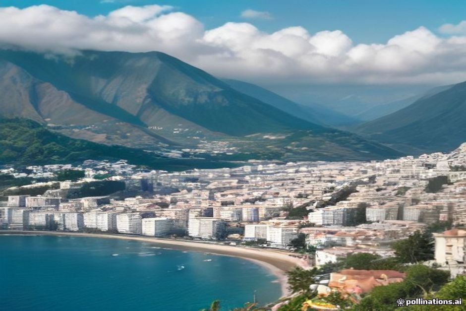
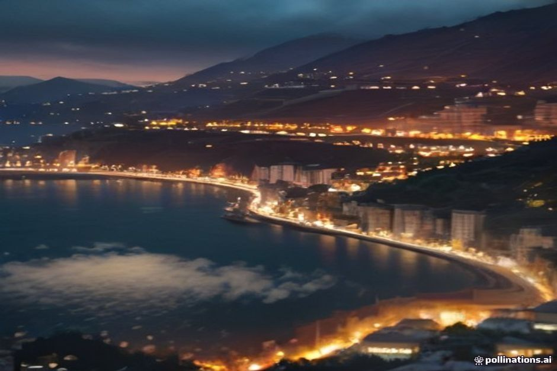

Every autumn we get the same message: "is it worth coming to Madeira in winter, or should we wait for summer?" Short answer — yes, with a few adjustments. Here's exactly what December through February actually looks like on the island.
Is Madeira warm in winter?
Yes — Funchal's daytime highs sit around 18–20°C for all of December, January and February, and nights rarely drop below 13°C. That makes Madeira, sitting off the coast of North Africa in the mid-Atlantic, one of the mildest winter destinations in Europe; locals call it "the island of eternal spring" for a reason. You'll want a light jacket for the evenings, not a coat.

Does it rain a lot in Madeira in winter?
Funchal and the south coast see rain on roughly six to seven days a month in December and January, easing slightly by February — but it's usually short, passing showers rather than grey, all-day rain. Madeira's microclimates matter even more in winter: the north coast (Santana, São Vicente, Porto Moniz) is consistently wetter and cloudier, while the south coast around Funchal and Câmara de Lobos stays drier and sunnier for most of the season. If the forecast looks unsettled, plan your day around the south.
Is the sea too cold to swim in Madeira in winter?
Not too cold, but noticeably cooler — the Atlantic around Madeira sits at roughly 18–19°C through winter, down from 22–23°C at the end of summer. That's still swimmable for most people, especially in the sheltered coves along the south coast, but it's a different experience than a July dip. This is exactly why our Sunset Trip is built for winter: it runs at 18:00 and skips swimming altogether, focusing instead on the coastline, the drone footage over the cliffs, and drinks on board as the light goes gold. The Day Trip, which does stop to swim at Fajã dos Padres and Ribeira Brava, is still available year-round and remains popular on the milder, sunnier winter days — just expect the water to feel brisk rather than warm.
What's on in Madeira over Christmas and New Year?
This is Madeira's single biggest event window. From early December, Funchal's city centre is transformed by an elaborate Christmas lights display — illuminated arches, animated scenes and decorated trees running the length of the Avenida Arriaga and the marina front. The Mercado dos Lavradores holds its famous market night on 23 December, packed with locals buying flowers, chestnuts and last-minute gifts. Then on 31 December, Funchal Bay hosts one of the largest fireworks displays on the planet: an eight-minute show launched from dozens of stations around the amphitheatre, the harbour and offshore boats, officially recognised by Guinness World Records as the world's largest fireworks display when it first won the title in 2006. If you can time a visit around New Year's Eve, book accommodation with a bay view well in advance — it's the busiest week of the Madeiran calendar.
What should you pack for a Madeira winter trip?
Layers, not a heavy coat. A packable rain jacket earns its space, along with a warmer layer for evenings and any time you're up in the mountains — Pico do Arieiro and Pico Ruivo can see near-freezing temperatures and occasional snow in winter, a sharp contrast to the coast. Bring a swimsuit regardless; south-coast days can turn warm enough for a quick swim even in January. Comfortable, grippy shoes matter more than usual, since winter rain makes cobbled streets and levada paths slicker.
Is winter a good time to visit Madeira?
For most travellers, yes — especially if crowds and price matter more than guaranteed sunshine. Flights and hotels are generally cheaper outside the July–September peak, popular spots like Cabo Girão and the Mercado dos Lavradores are noticeably quieter, and the weather, while less reliable than summer, is still mild enough for hiking, sightseeing and a boat trip along the coast. The main trade-off is the sea: if a long, warm swim is the point of your trip, spring and summer will serve you better. If you're coming for the coastline, the food, the Christmas lights or the fireworks, winter in Madeira delivers.
Madeira doesn't really have an off-season — it has a cooler one.
Whichever month you land, check the forecast a day or two ahead and build in flexibility. The island's weather changes fast, and on the water especially, a calm morning can turn into the best light of your whole trip.
